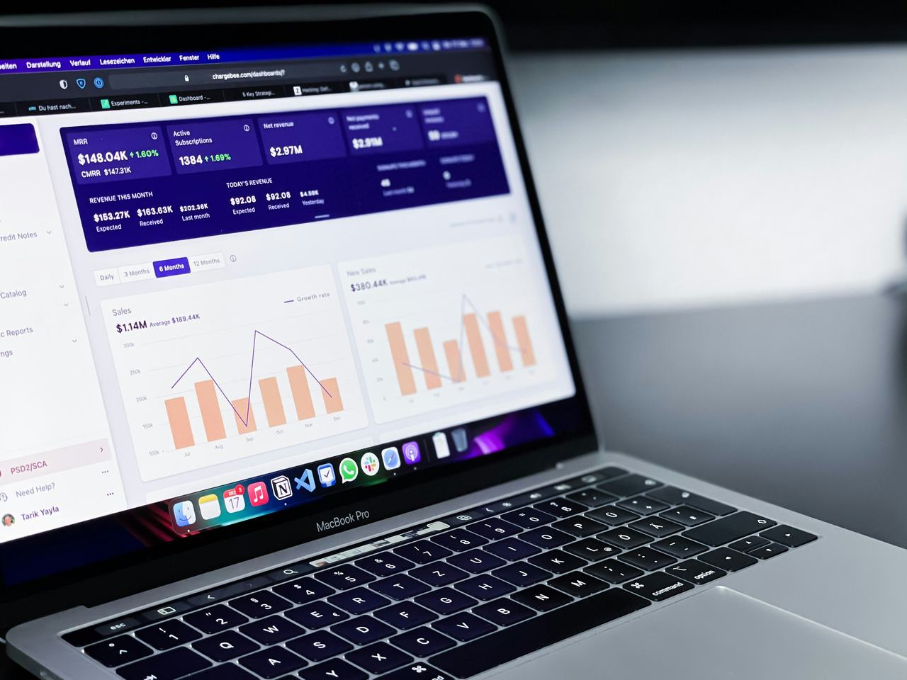
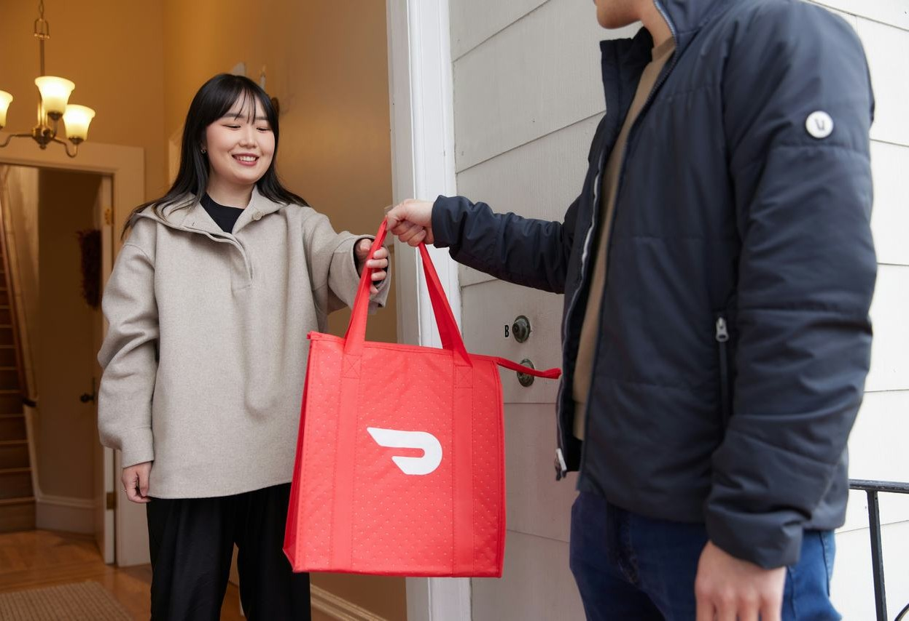
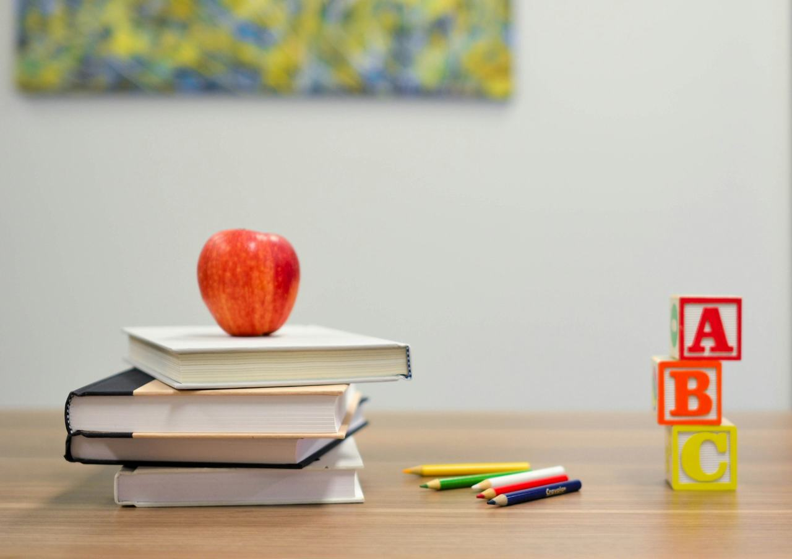

A clean and minimal dashboard design that helps you focus on what matters.
This project focuses on creating a minimalist dashboard design that only displays the most critical information. The design is clean and simple, with a focus on typography, color contrast, and negative space. The goal is to create a dashboard that is easy to use, and that allows users to quickly find the information they need. By removing all the unnecessary elements, the design directs the user's attention to the most important information, making it easier for them to take action.
Featured Projects

Food Delivery AppThis food delivery app is designed to help you find and order the best food from local restaurants. Search for restaurants, view menus, and place orders with ease. Get your food delivered right to your doorstep, and enjoy a delicious meal in the comfort of your home.
View Project
Learning PlatformTransform your learning experience with an intuitive and user-friendly platform designed to help you grow and succeed.
View Project News Portal
News Portal
A modern and responsive news portal theme perfect for news agencies and bloggers. Features a clean and intuitive user interface, search engine optimization, and a fully responsive design. Highly customizable to fit your brand's identity.
View Project